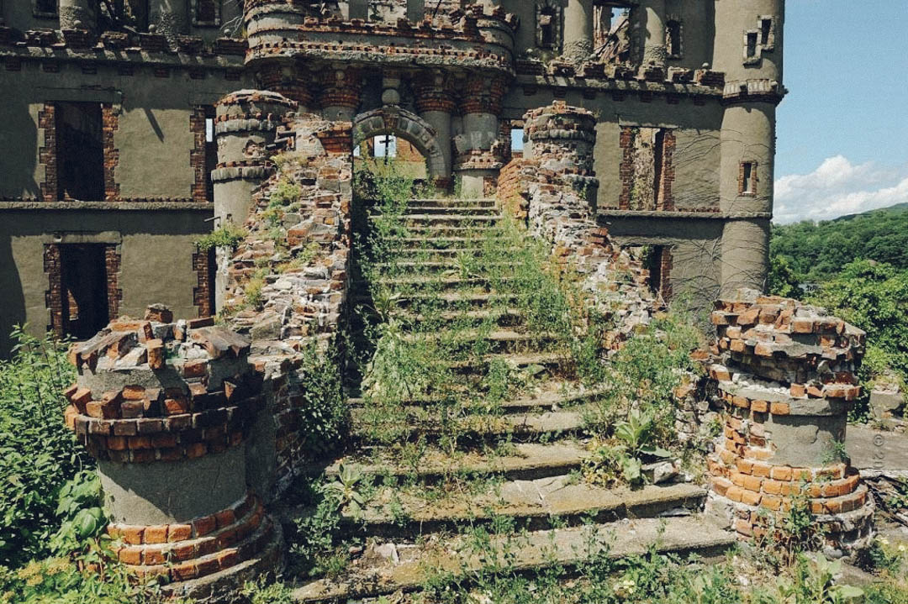
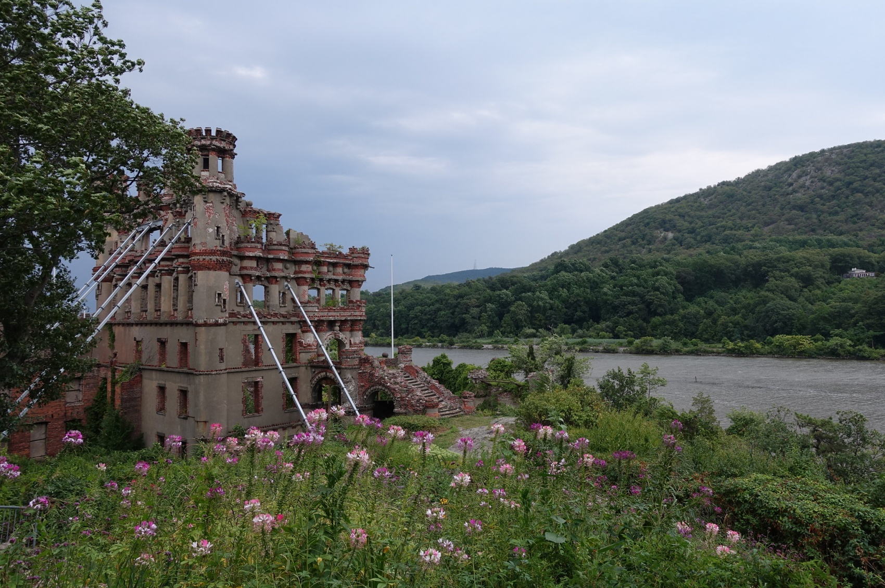

1. La isla que llama la atención
La silueta del castillo vista desde el tren o desde la orilla ha generado innumerables relatos: algunos la describen como un faro misterioso que atrae curiosos y fotógrafos.
El Castillo de Bannerman (construido en la mayor parte entre 1901 y 1918) se alza sobre Pollepel Island, una pequeña isla en el río Hudson. Fue mandado construir por Francis (Frank) Bannerman VI como depósito para su próspero negocio de excedentes militares: munición, armamento y material almacenado lejos de la ciudad.
La estructura simulaba un castillo escocés y servía además como residencia y escaparate publicitario para la empresa de Bannerman. Tras décadas de uso para almacenamiento, el lugar quedó en desuso en la segunda mitad del siglo XX; accidentes, hundimientos de embarcaciones y un incendio contribuyeron a su abandono y al deterioro de las instalaciones.
Desde los años 1990 y 2000 existe un esfuerzo de preservación liderado por la Bannerman Castle Trust, y en la actualidad se realizan visitas guiadas a la isla cuando las condiciones de seguridad lo permiten.
La silueta del castillo vista desde el tren o desde la orilla ha generado innumerables relatos: algunos la describen como un faro misterioso que atrae curiosos y fotógrafos.
Por su historia como almacén de armas y munición, abundan historias de ruidos extraños, cajas antiguas y fantasmas de la actividad industrial pasada.
Se cuenta que en noches de niebla se ve a una figura en los muelles o sombras que cruzan entre las ventanas vacías.
El incendio que afectó al complejo a mediados del siglo XX alimentó relatos sobre presencias y objetos perdidos entre las ruinas.
Proyectos artísticos recientes han utilizado el emplazamiento para instalaciones de luz que trazan la silueta del castillo, creando nuevas leyendas contemporáneas.

